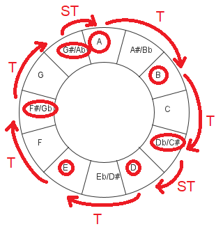
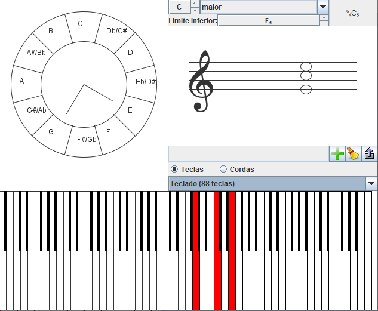
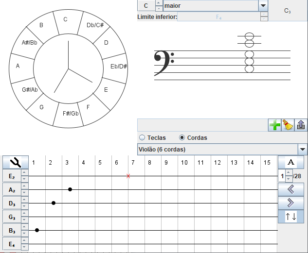

O som é uma onda mecânica (i.e., ao contrário das ondas eletromagnéticas, que envolvem campos elétricos e magnéticos, o som é a oscilação das partículas de um meio material, não podendo portanto se propagar no vácuo) e longitudinal (i.e., também ao contrário das ondas eletromagnéticas, em que a oscilação é transversal à direção de propagação, no som a oscilação ocorre na mesma direção da propagação).
As ondas sonoras num dado meio material se caracterizam essencialmente por duas de suas propriedades:
Seres humanos são capazes de ouvir ondas sonoras na faixa de frequência entre 20 e 20.000 Hz (ainda que essa faixa varie para diferentes pessoas, em função da idade e da saúde auditiva). Embora essa faixa seja contínua, existe um valor limiar a partir do qual cada ser humano é capaz de perceber uma variação nessa frequência.
Por esse motivo, a teoria musical ao longo da história convencionou maneiras de se discretizar a faixa de frequências com a qual os instrumentos musicais trabalham. Além da intrínseca limitação humana de ser capaz de perceber pequenas variações na frequência, a discretização cumpre com outros objetivos:
O último ponto apresentado levanta uma questão importante: se devemos trabalhar valores de frequências intervalados, como definir esses intervalos?
Não está no escopo deste texto explicar as origens da escala musical do ocidente, mas de maneira muito resumida, as notas musicais são definidas da seguinte maneira:
Em uma escala linear, tem-se:
e em uma escala logarítmica, tem-se:
As notas mostradas nas figuras acima são aquelas disponíveis para a composição de uma música no padrão ocidental. Porém as músicas, em geral, não se valem de todas as notas disponíveis, mas somente de algumas delas, selecionadas a partir de um dado espaçamento periódico.
Escalas musicais são as distâncias estabelecidas entre as notas que serão utilizadas em uma dada composição. Uma canção que utiliza todas as notas disponíveis vale-se da escala cromática. Quando a distância entre as notas obedece o padrão:
Tom - Tom - Semitom - Tom - Tom - Tom - Semitom
diz-se que a música utiliza uma escala maior. Se os espaçamentos são dados pelo padrão:
Tom - Semitom - Tom - Tom - Semitom - Tom - Tom
diz-se que a música utiliza uma escala menor. Uma vez definida a escala, o modo (ou tonalidade) é dado com base em uma nota a partir do qual o padrão acima vai se repetir. Por exemplo, o modo Lá maior define as seguinte notas:

Assim, uma canção em Lá maior possui somente as notas: A, B, C#, D, E, F#, G#, A
Embora a imensa maioria das canções utilize os modos maior (jônio) e menor (eólio), existem mais de 200 escalas e quase 1500 modos que podem ser utilizados. Este excelente website mostra todas essas possíveis combinações (e lhes atribui nomes), indicando como são vastas as possibilidades. Vale lembrar que, embora uma canção em um dado modo utilize exclusivamente as notas por ele definidas, nada impede o compositor de fugir dessa regra introduzindo notas que não pertencem àquele modo (de modo a obter um dado efeito estético - pode-se não seguir as regras, desde que você sabia o que está fazendo e quais são as consequências).
Uma vez que se escolheu o modo que uma dada canção (ou seja, quais notas a serem utilizadas e quais não), surge a seguinte questão: pode-se combinar diferentes notas? E, em caso afirmativo, essa combinação deve seguir alguma regra?
A resposta é sim, e as regras para combinação de diferentes notas são dadas pelos acordes: grupos de 3 a 4 notas que, ao serem combinadas, produzem um efeito eufônico. Os acordes mais comuns são:
Uma vez que as notas que podem ser usadas numa dada canção já estão pré-estabelecidadas pelo seu modo, definidos também estão os acordes que podem ser tocados. Voltando ao exemplo do modo Lá maior, tem-se os seguintes acordes possíveis:
| Notas | Acorde | Designação |
|---|---|---|
| A, C#, E | Lá maior | I |
| B, D, F# | Si menor | ii |
| C#, E, G# | Dó sustenido menor | iii |
| D, F#, A | Ré maior | IV |
| E, G#, B | Mi maior | V |
| F#, A, C# | Fá sustenido menor | vi |
| G#, B, D | Sol sustenido diminuto | vii0 |
Foi com intuito de mostrar os diferentes acordes e de como sintetiza-los em instrumentos de corda e teclado que o aplicativo abaixo apresentado foi concebido. Nele, é possível mostrar os diferentes acordes na pauta assim os meios de produzí-los em diferentes instrumentos.

